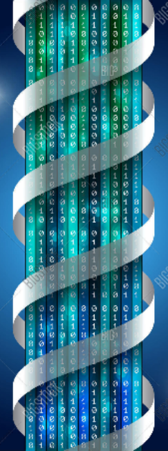

|  |
Securitatea cibernetică reprezintă protejarea sistemelor informatice împotriva furtului şi deteriorarea hardware-ului, software-ului sau a informaţiilor acestora, precum şi împiedicarea perturbării sau a direcţionării greşite a serviciilor pe care le furnizează.~ Informaţii despre securitatea cibernetică ~ Securitatea cibernetică include controlul accesului fizic la hardware, precum şi protecţia împotriva daunelor care pot apărea prin accesul la rețea, prin introducerea datelor și prin injectarea de coduri. De asemenea, datorită unei practici incorecte a operatorilor, fie intenționată, fie accidentală, securitatea IT poate să devieze uşor de la nişte proceduri sigure la unele nesigure prin diferite metode. Securitatea are o importanță din ce în ce mai ridicată datorită utilizării din ce în ce mai mari a sistemelor informatice, a internetului, rețelelor fără fir (precum Bluetooth și Wi-Fi) şi creșterea dispozitivelor "inteligente" (smartphone-uri, televizoare și dispozitive minuscule). |